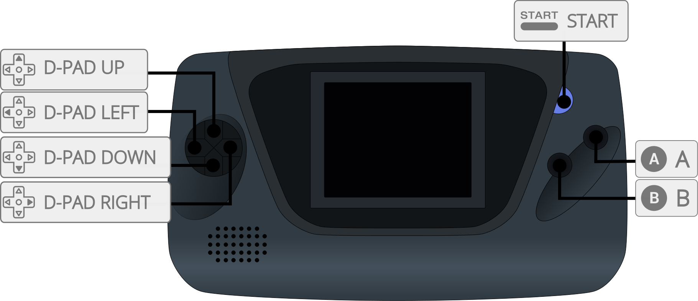
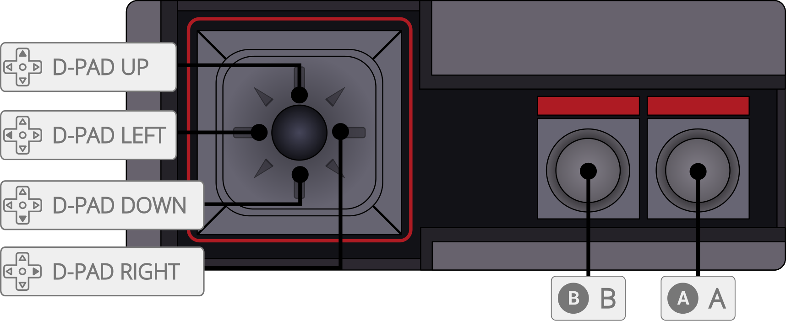

SMS Plus is an open-source Sega Master System and Game Gear emulator written by Charles MacDonald. SMS Plus GX is an enhanced version which includes improved accuracy, bug fixes with most games and others.
The SMS Plus GX core has been authored by
The SMS Plus GX core is licensed under
A summary of the licenses behind RetroArch and its cores can be found here.
Content that can be loaded by the SMS Plus GX core have the following file extensions:
RetroArch database(s) that are associated with the SMS Plus GX core:
Required or optional firmware files go in the frontend's system directory.
| Filename | Description | md5sum |
|---|---|---|
| bios.sms | Master System BIOS - Optional | 840481177270d5642a14ca71ee72844c |
| BIOS.col | Coleco BIOS - Required | 2c66f5911e5b42b8ebe113403548eee7 |
Frontend-level settings or features that the SMS Plus GX core respects.
| Feature | Supported |
|---|---|
| Restart | ✔ |
| Screenshots | ✔ |
| Saves | ✔ |
| States | ✔ |
| Rewind | ✔ |
| Netplay | ✕ |
| Core Options | ✔ |
| RetroAchievements | ✔ |
| RetroArch Cheats | ✔ |
| Native Cheats | ✕ |
| Controls | ✔ |
| Remapping | ✔ |
| Multi-Mouse | ✕ |
| Rumble | ✕ |
| Sensors | ✕ |
| Camera | ✕ |
| Location | ✕ |
| Subsystem | ✕ |
| Softpatching | ✔ |
| Disk Control | ✕ |
| Username | ✕ |
| Language | ✕ |
| Crop Overscan | ✕ |
| LEDs | ✕ |
The SMS Plus GX core's internal core name is 'SMS Plus GX'
Frontend's Save directory
| File | Description |
|---|---|
| *.srm | Cartridge battery save |
Frontend's State directory
| File | Description |
|---|---|
| *.state# | State |
The SMS Plus GX core has the following option(s) that can be tweaked from the core options menu. The default setting is bolded.
Settings with (Restart) means that core has to be closed for the new setting to be applied on next launch.
Hardware (Restart) [smsplus_hardware] (auto/master system/master system II/game gear/game gear (sms compatibility)/coleco)
Emulates which system hardware to use.
Region (Restart) [smsplus_region] (auto/ntsc-u/pal/ntsc-j)
Runs console at a specific video timing based on region
Remove Border [smsplus_remove_left_border] (disabled/enabled)
Removes the black border on the left of some games. (SMS Only)
Blargg NTSC Filter [smsplus_ntsc_filter] (disabled/monochrome/composite/svideo/rgb)
Replicates the analog signal effects such as color bleeding and pixel artifacts to match the images a TV would show.
The SMS Plus GX core supports the following device type(s) in the controls menu, bolded device types are the default for the specified user(s):


| RetroPad Inputs | SMS Plus GX core Inputs |
|---|---|
|
1 |
|
Pause |
|
D-Pad Up |
|
D-Pad Down |
|
D-Pad Left |
|
D-Pad Right |
|
2 |
| RetroKeyboard Inputs | RetroKeyboard |
|---|---|
| Keyboard 1 | 1 |
| Keyboard 2 | 2 |
| Keyboard 3 | 3 |
| Keyboard 4 | 4 |
| Keyboard 5 | 5 |
| Keyboard 6 | 6 |
| Keyboard 7 | 7 |
| Keyboard 8 | 8 |
| Keyboard 9 | 9 |
| Keyboard Dollar | $ |
| Keyboard Asterisk | * |